Apollo车辆适配教程¶
引言¶
本文所介绍的Apollo新车适配方法，可以帮助开发者快速接入新车辆，以方便开发者在Apollo上进行软件开发。文中所介绍的车辆线控信号标准和要求均源自Apollo开放车辆认证平台，目前车辆认证平台已经有Lincoln，Lexus，GE3，WEY等车型，有意愿把车加入Apollo车辆认证平台的车企、车辆提供商，可以按照文档内对线控的具体要求，熟悉和准备车辆底层控制协议，节省前期准备时间，欢迎有兴趣的开发者移步至Apollo开放车辆认证平台(http://apollo.auto/vehicle/certificate_cn.html) 了解更多详细内容。
适配一辆符合Apollo标准的车辆¶
本文主要介绍如何在Apollo内添加一辆符合Apollo标准的新车，方便开发者设计符合Apollo线控要求的底盘系统，开发适配Apollo软件的底盘适配代码，构建快速接入Apollo软件的能力。
开发者在适配一辆新车的CAN通信时，首先需要设计完成符合Apollo线控要求的底盘通信协议，这一部分就是根据Apollo线控列表构建一个车辆底盘信号的DBC文件，设计底盘相关接口定义、报文和信号与DBC一一对应。在完成了DBC文件设计后，根据Apollo提供的DBC转化代码工具，得到初版的canbus底层适配代码，然后添加相关车辆的控制逻辑，在Apollo搭建车辆底层chassis信号及控制车辆信号。最后通过canbus调试工具进行信号调试和验证，确保车辆的底盘信号与Apollo上层通信完全无问题。
一、符合Apollo线控标准的车辆¶
车辆DBC¶
开发一台搭载Apollo系统的车辆，首先的工作就是建立Apollo与车辆底层之间的通信，整车是通过CAN总线(CAN bus, Controller Area Network)进行各个控制器(ECU, electronic control units)之间的通信，因此Apollo控制系统在接入车辆系统时，也通过CAN总线通信方式对车辆进行控制。车辆需要开放一部分底盘信号，将这些信号配置成符合Apollo的线控标准要求的DBC文件(Database file, 是一中用于描述CAN总线上数据的专用文件，能够方便用户快速构建车辆CAN通信的网络结构，定义CAN总线上的信号、报文等相关信息)。这里推荐开发者使用canoe软件的CANdb++编辑生成的文件，Apollo软件处理底盘DBC文件生成底盘适配代码模板，开发者通过简单的编程开发，即可将车辆开放的底盘信号适配至Apollo的软件中，实现Apollo与车辆底盘间的通信。
DBC线控标准详解¶
开发者在开发车辆底盘控制信号时，需要参照Apollo官网车辆认证平台（http://apollo.auto/docs/procedure_cn.html） 发布的车辆线控标准， 乘用车标准：http://apollo-homepage.bj.bcebos.com/Apollo_by_wire_requirement.xlsx ； 微型车标准：https://apollohomepage.bj.bcebos.com/Apollo_by_wire_requirement_micro_car.xlsx 车辆线控标准规定了车辆底盘信号的需求，也规定了每一帧控制信号在底盘的响应时间要求。车辆底盘信号不仅需要在功能上符合要求，也需要在性能上符合控制要求，这样才能满足符合Apollo线控标准的车辆控制底盘。
开发者在改造车辆底盘为线控底盘时，要参考车辆线控标准满足控制的性能要求，如转向信号要求响应时间在100ms内，最大超调量满足满足具体要求等。请开发者仔细阅读线控列表内的性能要求，在Apollo车辆认证时，也会对底盘的性能进行相应测试。
在实际开发DBC的过程中，每个信号定义的细节也有具体的要求，这样做为了节省开发者时间，同时提高车辆认证的效率，需要开发者对每个信号要重点理解和注意。下面是Apollo对车辆底盘信号的需求如下表所示：
 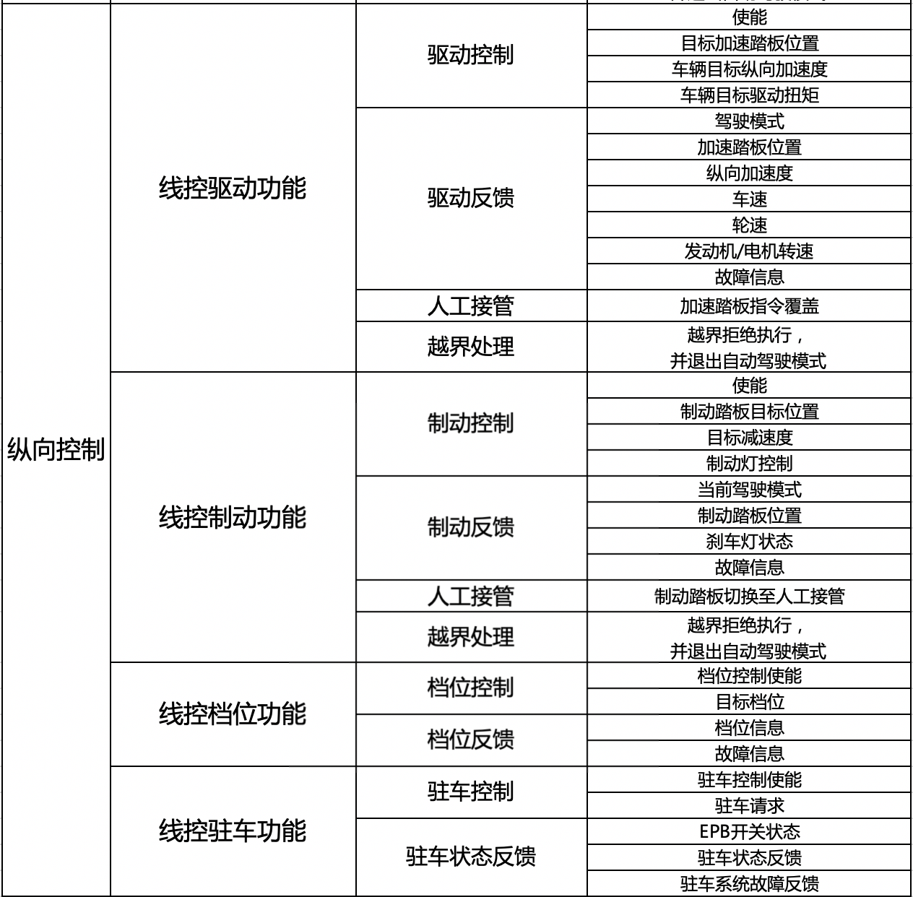
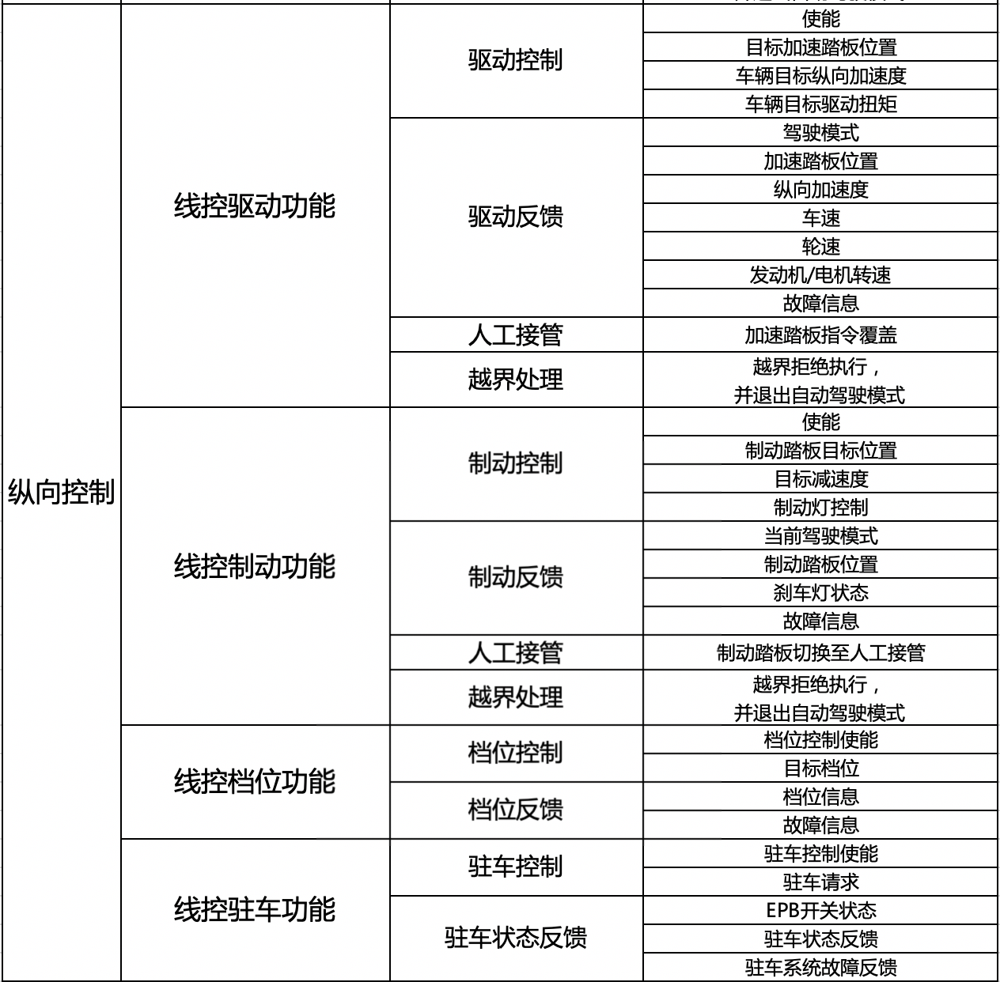

车辆的底盘控制是Apollo与底盘通信的基础，每一个控制信号都需要可靠和准确。人工接管和越界处理是保证在测试和使用时随时接管，确保突发情况发生时的行车安全。除了线控列表内对信号的详细要求外，开发者还需要格外注意横向和纵向使能信号的独立，底盘接管逻辑等特殊要求，下面对信号的功能特殊要求做详细说明。
线控转向¶
转向使能信号
（1）转向使能信号是控制车辆进入或退出转向自动驾驶模式，该使能信号必须是通过上升沿触发方式的信号，使能信号原则上是1个信号；有些开发者若有不同信号同时控制，才能使能转向进入自动驾驶状态，需要开发者在底层自己集成相关使能信号的逻辑控制，给Apollo使能信号原则上必须只有1个。
（2）转向自动驾驶模式必须独立，使能信号必须独立，不与纵向的其他模块（如驱动、制动、档位、驻车等）使能信号相关联，需要满足：单独使能进入转向自动驾驶模式，纵向所处驾驶模式不发生变化，下发方向盘转角或转速控制信号，车辆能够响应相应的转角和转速；单独使能退出转向自动驾驶模式，纵向所处驾驶模式不发生变化，下发方向盘转角或转速控制信号，车辆不响应；
（3）如果横向被接管，再次进入自动驾驶模式时，需要通过上升沿触发信号进入自动驾驶。
转向控制信号
目标方向盘转角：控制方向盘转角的信号，单位是度（deg），控制方向盘（逆时针）左转为正值，控制方向盘（顺时针）右转为负值。
目标方向盘转速：多数车辆无法开放次控制信号接口，建议将方向盘转速设置为最大值，提高系统响应时间。
转向反馈信号
方向盘实际转角反馈：反馈方向盘实际转角，要求反馈准确，左转反馈为正值，右转反馈为负值。
转向驾驶模式反馈：反馈车辆当前所处的转向驾驶模式，至少需要3种模式：自动驾驶模式，手动驾驶模式，被人工接管模式。
故障信息反馈：反馈转向控制系统是否存在故障。
人工接管处理
（1）对于乘用车/商用车，当人为施加的方向盘扭矩大于其接管门限时，车辆各个模块均退出自动驾驶，此时转向驾驶模式反馈被接管；对于底盘小车等，当小车底盘接收到遥控器控制车辆转向的指令时，车辆各个模块均退出自动驾驶；转向接管需要独立，此时转向驾驶模式反馈被人工接管模式，驱动驾驶模式、制动驾驶模式此时应反馈手动驾驶模式；
（2）当转向自动驾驶被人工接管时，所有模块都退出自动驾驶模式。
越界处理
越界处理的原则是越界拒绝执行，并退出自动驾驶模式。 当Apollo下发控制指令超过原控制指令的定义范围时，此时称为越界。发生越界时，转向需要退出自动驾驶模式。 如定义目标方向盘转角最大范围为-500deg~500deg，若Apollo下发的转角指令不在此范围时，底盘需要对此越界拒绝执行，并退出自动驾驶模式。
线控驱动¶
驱动使能：
（1）驱动使能信号是控制车辆进入或退出驱动自动驾驶模式，该使能信号必须是通过上升沿触发方式的信号，使能信号原则上是1个信号；有些开发者若有不同信号同时控制，才能使能转向进入自动驾驶状态，需要开发者在底层自己集成相关使能信号的逻辑控制，给Apollo使能信号原则上必须只有1个。
（2）驱动使能信号必须独立，不与转向模块使能信号相关联，需要满足：单独使能进入纵向自动驾驶模式，转向所处驾驶模式不发生变化，下发驱动控制信号，车辆能够响应相应的控制命令；单独使能退出驱动自动驾驶模式，转向所处驾驶模式不发生变化，下发驱动控制信号，车辆不响应；
（3）原则上驱动使能信号与制动、档位、驻车使能相互独立根据以往的实际经验，有些车辆在纵向驱动和制动使能信号归为一个信号，这样的特殊情况需要开发者额外注意，确保纵向的使能一定要与横向使能分开并独立，纵向各模块如果相互关联，则使能需要驱动、制动、档位、驻车一同进去自动驾驶模式，不使能一同退出自动驾驶模式。
（4）如果横向被接管，再次进入自动驾驶模式时，需要通过上升沿触发信号进入自动驾驶。
驱动控制信号：
目标加速踏板位置：控制量是加速踏板的位置百分比，范围是0~100%，100%代表加速踏板踩到最大位置。
车辆目标纵向加速度和车辆目标驱动扭矩是车辆控制信号可选项。
驱动反馈信号：
驾驶模式：反馈车辆当前所处的驱动驾驶模式，至少需要3种模式：自动驾驶模式，手动驾驶模式，被人工接管模式。
加速踏板位置：需准确反馈当前车辆实际踏板位置。
纵向加速度：需准确反馈当前车辆的纵向加速度。
车速：需准确反馈当前车辆车速，Apollo需求的车速是m/s，一般车辆反馈的车速单位是km/h，此时需要在DBC转换为适配代码后单独进行单位转化。
轮速：对于乘用车，需提供相关轮速信号，轮速大小，单位km/h。如果有条件，可提供车轮运动方向反馈，Value Description按照以下顺序0x00，FORWARD；0x01，BACKWARD；0x02，STANDSTILL；0x03，INVALID。
发动机/电机转速：需准确反馈当前发动机或电机转速，单位r/min。
故障信息：反馈驱动系统是否存在故障。
人工接管：
（1）当车辆底盘接收到人工干预的加速踏板指令（或对于底盘小车，接收到遥控器下发的加速信号）时，车辆各个模块均退出自动驾驶。转向接管需要独立，此时驱动驾驶模式反馈被人工接管模式，转向驾驶模式、制动驾驶模式此时应反馈手动驾驶模式；
（2）驱动自动驾驶被人工接管时，所有模块都退出自动驾驶模式。
越界处理
发生越界时，转向需要退出自动驾驶模式。如定义目标加速踏板位置范围为0~100%，若Apollo下发的控制踏板指令不在此范围时，底盘需要对此越界拒绝执行，并退出自动驾驶模式。
线控制动¶
制动使能：
（1）制动使能信号是控制车辆进入或退出驱动自动驾驶模式，该使能信号必须是通过上升沿触发方式的信号，使能信号原则上是1个信号；有些开发者若有不同信号同时控制，才能使能转向进入自动驾驶状态，需要开发者在底层自己集成相关使能信号的逻辑控制，给Apollo使能信号原则上必须只有1个。
（2）制动使能信号必须独立，不能与转向模块使能信号相关联，需要满足：单独使能进入纵向自动驾驶模式，转向所处驾驶模式不发生变化，下发制动控制信号，车辆能够响应相应的控制命令；单独使能退出驱动自动驾驶模式，转向所处驾驶模式不发生变化，下发制动控制信号，车辆不响应；
（3）原则上驱动使能信号与驱动、档位、驻车使能相互独立。根据以往的实际经验，有些车辆在纵向驱动和制动使能信号归为一个信号，这样的特殊情况需要开发者额外注意，确保纵向的使能一定要与横向使能分开并独立，纵向各模块如果相互关联，则使能需要驱动、制动、档位、驻车一同进去自动驾驶模式，不使能一同退出自动驾驶模式。
（4）如果横向被接管，再次进入自动驾驶模式时，需要通过上升沿触发信号进入自动驾驶。
制动控制信号
制动踏板目标位置：控制量是加速踏板的位置百分比，范围是0~100%，100%代表制动踏板踩到最大位置。
目标减速度：可选项，控制量是车辆的目标减速度大小。
制动灯控制：可选项，控制制动灯是否点亮，一般车辆的底盘会在制动时默认点亮制动灯。
制动反馈信号
驾驶模式：反馈车辆当前所处的制动驾驶模式，至少需要3种模式：自动驾驶模式，手动驾驶模式，被人工接管模式。
制动踏板位置：制动踏板位置，百分比。
刹车灯状态：反馈刹车灯是否点亮。
故障信息：反馈制动系统是否有故障。
人工接管
（1）当车辆底盘接收到人工干预的制动踏板指令（或对于底盘小车，接收到遥控器下发的减速信号）时，车辆各个模块均退出自动驾驶。转向接管需要独立，此时驱动驾驶模式反馈被人工接管模式，转向驾驶模式、制动驾驶模式此时应反馈手动驾驶模式；
（2）驱动自动驾驶被人工接管时，所有模块都退出自动驾驶模式。
越界处理
发生越界时，转向需要退出自动驾驶模式。如定义目标制动踏板位置范围为0~100%，若Apollo下发的控制踏板指令不在此范围时，底盘需要对此越界拒绝执行，并使所有模式退出自动驾驶模式。
线控档位¶
档位使能
使能独立，不与横向控制相关联。可以与纵向使能信号关联，也可独立使能。档位使能信号必须是通过上升沿触发方式的信号，使能信号原则上是1个信号。
档位控制
控制档位信号，档位信号必须按照以下顺序：0x00：N档；0x01：D；0x02：R；0x03：P；0x04：NONE。多余的不必再增加。
档位反馈
档位信息：反馈当前档位信号，反馈顺序与控制档位信号顺序一致：0x00：N档；0x01：D；0x02：R；0x03：P；0x04：NONE。多余的不必再增加。
故障信息：反馈换挡系统是否存在故障。
线控驻车¶
驻车使能
使能独立，不与横向控制相关联。可以与纵向使能信号关联，也可独立使能。驻车使能信号必须是通过上升沿触发方式的信号，使能信号原则上是1个信号。
驻车控制
驻车信号有效，电子手刹抱死，车辆驻车；驻车信号无效，电子手刹松开，车辆不驻车。
驻车反馈
EPB开关状态：反馈当前电子手刹是否抱死或松开。
驻车状态反馈：反馈当前驻车是自动驾驶模式还是手动控制模式。至少需要2种模式：自动驾驶模式，手动驾驶模式，被人工接管模式。
驻车系统故障反馈：反馈驻车系统故障。
车辆VIN码¶
VIN码一般17位，按照ASCII码格式，每一个ASCII占1字节，需要3帧报文连续发出，但是VIN码不需要实时更新，所以在系统请求进入自动驾驶时，VIN码通过CAN总线发出，并一直保持该值不再更新，也可减少总线的负载。
DBC文件要求¶
熟悉了上述Apollo对车辆底盘信号的要求，第二步是进行车辆底盘信号database（DBC）文件进行编辑，设置通信的网络结构，每个信号的初值、符号类型，精度，大小范围，取值等，进而组合成相应的CAN通信报文（message）与Apollo进行通信。下面使用CANdb++软件对DBC文件进行编辑，有较好的可视化界面，该软件目前只适用于Windows系统。
因为DBC文件后面会根据Apollo的转译脚本工具，将底盘定义的报文（message）、信号（signal）转化为C++程序代码，因此在编辑DBC时，对信号的名称定义、注释、赋值等就要符合C++语言定义规范，这样以确保在后期调试时不会因为DBC文件的问题无法调通CANBUS通信。根据Apollo代码要求，我们总结了以下注意事项：

3. 注释不能有回车符和换行符，comment（注释）必须为英文¶
每帧报文（message）如果有注释，注释内不要有换行，不能写中文，必须为英文格式。

4. VAL_（枚举值）（Value Description）需要使用英文，且不能有相同定义名称，必须为字母或字母和数字组合，不能有符号。¶
对于大部分状态反馈信号和控制信号，如档位反馈，驾驶模式反馈等，需要对信号进行定义，在信号定义的Value Description项内进行定义，定义的名称要遵循C++命名规范，要求使用英文，且不能有相同定义名称，必须为字母或字母和数字组合，不能有符号。如下图是的档位反馈信号的Value Description定义。
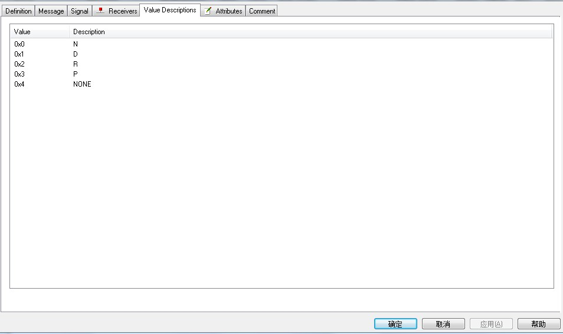
5. 反馈信号和控制信号中如车速，轮速，加速度，踏板位置（百分比）等double类型的反馈和控制信号在DBC中Value Description项中必须为空。¶
对于实时数值反馈信号和数值控制信号，如车速（实际车速）、轮速反馈（实际轮速），踏板控制（百分比），转角控制（实际转角值）等，此类信号在定义Value Description项中不能加任何内容。
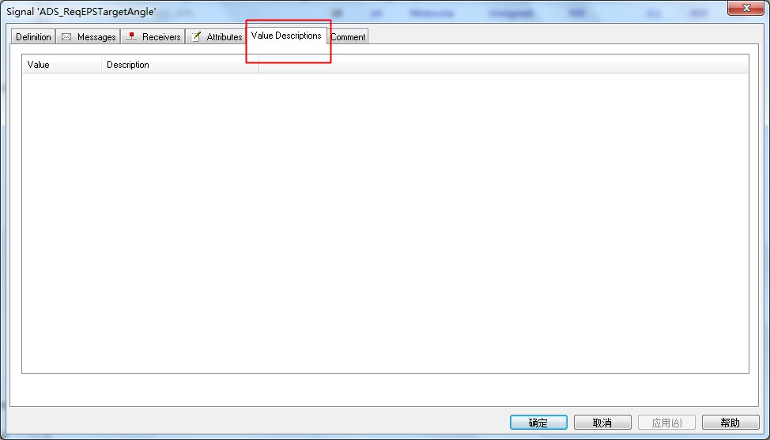
6. 转向信号的范围，在定义时要填写准确的取值范围，注意控制转角的精度一般不高于0.05deg，踏板百分比精度（factor）不高于0.1。¶
对于所有报文的Byte Order，一个DBC内的信号只能统一定义，全部是Motorola格式或者全部是Intel格式。

二、适配CANBUS代码¶
1. DBC文件转换成canbus模板代码¶
Canbus适配代码可以使用apollo的工具生成，在转换代码前，要保证DBC按照上述的DBC文件要求完成，并通过gedit打开dbc文件，另存转码为UTF-8格式保存。
（1）将DBC文件放置指定目录下，目录apollo/modules/tools/gen_vehicle_protocol内。
（2）修改DBC转换脚本的配置文件：下面以GE3车型添加为例，在apollo/modules/tools/gen_vehicle_protocol目录下，复制默认存在的mkz_conf.yml文件并重命名为ge3_conf.yml，修改该配置文件，如下图所示：
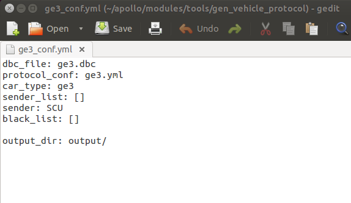
dbc_file：填写对应你的DBC文件名称，DBC文件名称一般以车型名称命名，并以.dbc结束；
protocol_conf：与上述DBC文件名称命名相同，填写ge3.yml；
car_type：填入车型名称；
sender_list：[ ] ：发送列表，这里默认为空；
sender：此处修改为与DBC内定义的Apollo的名称一致，ge3的DBC内定义Apollo名称为SCU。
（3）完成ge3_conf.yml配置文件设置，启动docker，进入Apollo的容器后，在apollo/modules/tools/gen_vehicle_protocol目录下，找到DBC转化工具gen.py，执行代码：
cd modules/tools/gen_vehicle_protocol
python gen.py ge3_conf.ymal
执行完成上述脚本后，在终端内会显示生成了控制协议5个，反馈协议11个。
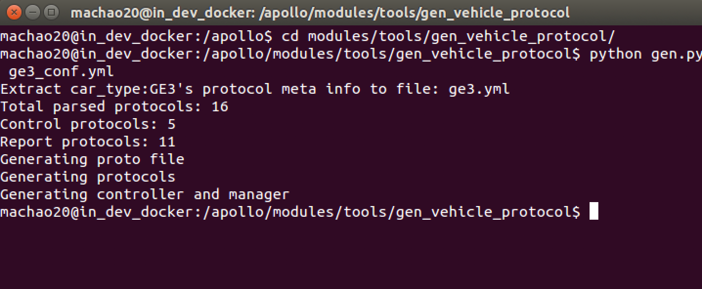
这时在apollo/modules/tools/gen_vehicle_protocol目录下，会生成一个output文件夹，文件夹内有2个文件夹，一个是proto文件夹，一个是vehicle文件夹；这两个文件内的代码内容就是我们要适配canbus的基本代码模板了。我们需要把文件内的代码拷贝到apollo的canbus层内，进行代码适配添加。
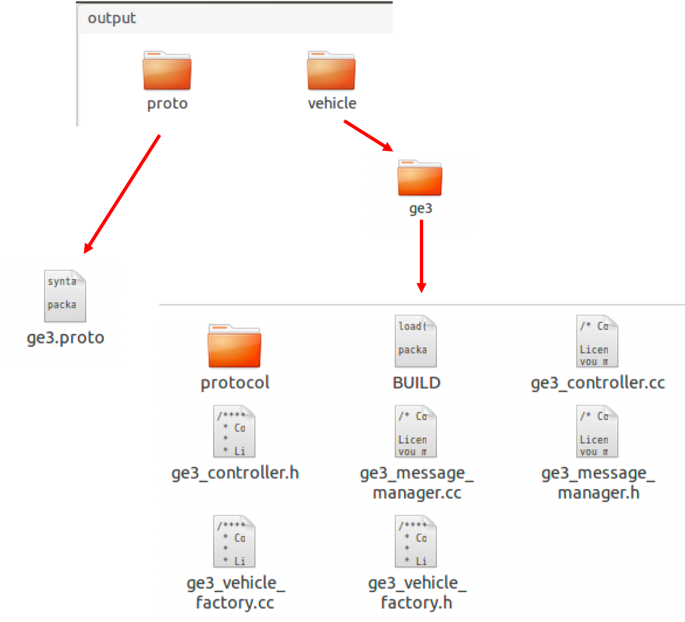
注意：把这个output文件夹内生成的代码模板拷贝至相应的apollo目录后，要删除该文件夹，如果不删除该文件夹，后期编译apollo时会报错。该文件夹有保护权限，请在apollo的docker内执行删除代码：
rm -rf output/
2. 适配代码合入apollo文件内¶
下面以添加ge3车型为例，将该代码添加至apollo内：
（1）将apollo/modules/tools/gen_vehicle_protocol/output/proto 文件夹内ge3.proto文件拷贝至apollo/modules/canbus/proto 文件夹内，并在该文件夹内修改chassis_detail.proto，在该文件头部添加头文件import "modules/canbus/proto/ge3.proto"
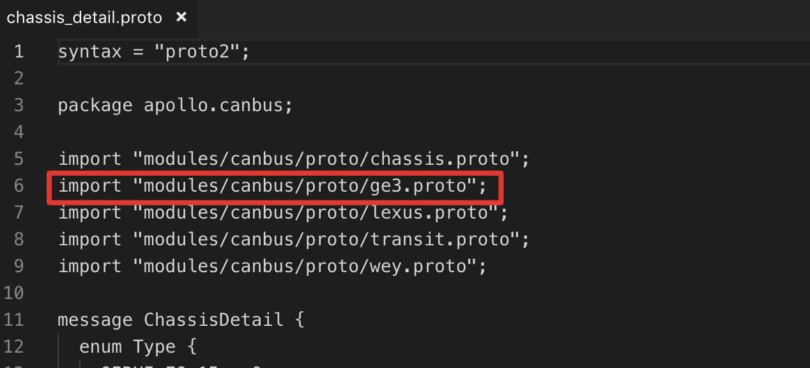
在message ChassisDetail{} 结构体内的最后一行添加要增加的新车型变量定义： Ge3 ge3 = 21；
 在
在pollo/modules/canbus/proto目录的BUILD文件内添加上述新proto的依赖："ge3.proto"；
 （2）将
（2）将apollo/modules/tools/gen_vehicle_protocol/output/vehicle/ 内的ge3文件夹拷贝至apollo/modules/canbus/vehicle/ 文件夹下；

3.实现新的车辆控制逻辑¶
实现新的车辆控制逻辑，在apollo/modules/canbus/vehicle/ge3/ge3_controller.cc 文件编写控制逻辑代码，主要包含将解析的底盘反馈报文的信息，通过chassis和chassis_detail广播出车辆底盘信息。chassis主要包括获取底盘的车速、轮速、发动机转速、踏板反馈、转角反馈等信息， chassis_detail是每一帧报文的实际信息，这一部分编写的代码如下所示：
// 3
chassis_.set_engine_started(true);
// check if there is not ge3, no chassis detail can be retrieved and return
if (!chassis_detail.has_ge3()) {
AERROR << "NO GE3 chassis information!";
return chassis_;
}
Ge3 ge3 = chassis_detail.ge3();
// 5
if (ge3.has_scu_bcs_3_308()) {
Scu_bcs_3_308 scu_bcs_3_308 = ge3.scu_bcs_3_308();
if (scu_bcs_3_308.has_bcs_rrwheelspd()) {
if (chassis_.has_wheel_speed()) {
chassis_.mutable_wheel_speed()->set_is_wheel_spd_rr_valid(
scu_bcs_3_308.bcs_rrwheelspdvd());
chassis_.mutable_wheel_speed()->set_wheel_direction_rr(
(WheelSpeed::WheelSpeedType)scu_bcs_3_308.bcs_rrwheeldirection());
chassis_.mutable_wheel_speed()->set_wheel_spd_rr(
scu_bcs_3_308.bcs_rrwheelspd());
}
}
if (scu_bcs_3_308.has_bcs_rlwheelspd()) {
if (chassis_.has_wheel_speed()) {
chassis_.mutable_wheel_speed()->set_is_wheel_spd_rl_valid(
scu_bcs_3_308.bcs_rlwheelspdvd());
chassis_.mutable_wheel_speed()->set_wheel_direction_rl(
(WheelSpeed::WheelSpeedType)scu_bcs_3_308.bcs_rlwheeldirection());
chassis_.mutable_wheel_speed()->set_wheel_spd_rl(
scu_bcs_3_308.bcs_rlwheelspd());
}
}
if (scu_bcs_3_308.has_bcs_frwheelspd()) {
if (chassis_.has_wheel_speed()) {
chassis_.mutable_wheel_speed()->set_is_wheel_spd_fr_valid(
scu_bcs_3_308.bcs_frwheelspdvd());
chassis_.mutable_wheel_speed()->set_wheel_direction_fr(
(WheelSpeed::WheelSpeedType)scu_bcs_3_308.bcs_frwheeldirection());
chassis_.mutable_wheel_speed()->set_wheel_spd_fr(
scu_bcs_3_308.bcs_frwheelspd());
}
}
if (scu_bcs_3_308.has_bcs_flwheelspd()) {
if (chassis_.has_wheel_speed()) {
chassis_.mutable_wheel_speed()->set_is_wheel_spd_fl_valid(
scu_bcs_3_308.bcs_flwheelspdvd());
chassis_.mutable_wheel_speed()->set_wheel_direction_fl(
(WheelSpeed::WheelSpeedType)scu_bcs_3_308.bcs_flwheeldirection());
chassis_.mutable_wheel_speed()->set_wheel_spd_fl(
scu_bcs_3_308.bcs_flwheelspd());
}
}
}
if (ge3.has_scu_bcs_2_307() && ge3.scu_bcs_2_307().has_bcs_vehspd()) {
chassis_.set_speed_mps(
static_cast<float>(ge3.scu_bcs_2_307().bcs_vehspd()));
} else {
chassis_.set_speed_mps(0);
}
// 7
// ge3 only has fuel percentage
// to avoid confusing, just don't set
chassis_.set_fuel_range_m(0);
if (ge3.has_scu_vcu_1_312() && ge3.scu_vcu_1_312().has_vcu_accpedact()) {
chassis_.set_throttle_percentage(
static_cast<float>(ge3.scu_vcu_1_312().vcu_accpedact()));
} else {
chassis_.set_throttle_percentage(0);
}
// 9
if (ge3.has_scu_bcs_1_306() && ge3.scu_bcs_1_306().has_bcs_brkpedact()) {
chassis_.set_brake_percentage(
static_cast<float>(ge3.scu_bcs_1_306().bcs_brkpedact()));
} else {
chassis_.set_brake_percentage(0);
}
// 23, previously 10
if (ge3.has_scu_vcu_1_312() && ge3.scu_vcu_1_312().has_vcu_gearact()) {
switch (ge3.scu_vcu_1_312().vcu_gearact()) {
case Scu_vcu_1_312::VCU_GEARACT_INVALID: {
chassis_.set_gear_location(Chassis::GEAR_INVALID);
} break;
case Scu_vcu_1_312::VCU_GEARACT_DRIVE: {
chassis_.set_gear_location(Chassis::GEAR_DRIVE);
} break;
case Scu_vcu_1_312::VCU_GEARACT_NEUTRAL: {
chassis_.set_gear_location(Chassis::GEAR_NEUTRAL);
} break;
case Scu_vcu_1_312::VCU_GEARACT_REVERSE: {
chassis_.set_gear_location(Chassis::GEAR_REVERSE);
} break;
case Scu_vcu_1_312::VCU_GEARACT_PARK: {
chassis_.set_gear_location(Chassis::GEAR_PARKING);
} break;
default:
chassis_.set_gear_location(Chassis::GEAR_INVALID);
break;
}
} else {
chassis_.set_gear_location(Chassis::GEAR_INVALID);
}
// 11
if (ge3.has_scu_eps_311() && ge3.scu_eps_311().has_eps_steerangle()) {
chassis_.set_steering_percentage(
static_cast<float>(ge3.scu_eps_311().eps_steerangle() /
vehicle_params_.max_steer_angle() * M_PI / 1.80));
} else {
chassis_.set_steering_percentage(0);
}
// 13
if (ge3.has_scu_epb_310() && ge3.scu_epb_310().has_epb_sysst()) {
chassis_.set_parking_brake(ge3.scu_epb_310().epb_sysst() ==
Scu_epb_310::EPB_SYSST_APPLIED);
} else {
chassis_.set_parking_brake(false);
}
// 14, 15: ge3 light control
if (ge3.has_scu_bcm_304() && ge3.scu_bcm_304().has_bcm_highbeamst() &&
Scu_bcm_304::BCM_HIGHBEAMST_ACTIVE ==
ge3.scu_bcm_304().bcm_highbeamst()) {
if (chassis_.has_signal()) {
chassis_.mutable_signal()->set_high_beam(true);
}
} else {
if (chassis_.has_signal()) {
chassis_.mutable_signal()->set_high_beam(false);
}
}
// 16, 17
if (ge3.has_scu_bcm_304()) {
Scu_bcm_304 scu_bcm_304 = ge3.scu_bcm_304();
if (scu_bcm_304.has_bcm_leftturnlampst() &&
Scu_bcm_304::BCM_LEFTTURNLAMPST_ACTIVE ==
scu_bcm_304.bcm_leftturnlampst()) {
chassis_.mutable_signal()->set_turn_signal(
common::VehicleSignal::TURN_LEFT);
} else if (scu_bcm_304.has_bcm_rightturnlampst() &&
Scu_bcm_304::BCM_RIGHTTURNLAMPST_ACTIVE ==
scu_bcm_304.bcm_rightturnlampst()) {
chassis_.mutable_signal()->set_turn_signal(
common::VehicleSignal::TURN_RIGHT);
} else {
chassis_.mutable_signal()->set_turn_signal(
common::VehicleSignal::TURN_NONE);
}
} else {
chassis_.mutable_signal()->set_turn_signal(
common::VehicleSignal::TURN_NONE);
}
// 18
if (ge3.has_scu_bcm_304() && ge3.scu_bcm_304().has_bcm_hornst() &&
Scu_bcm_304::BCM_HORNST_ACTIVE == ge3.scu_bcm_304().bcm_hornst()) {
chassis_.mutable_signal()->set_horn(true);
} else {
chassis_.mutable_signal()->set_horn(false);
}
// vin number will be written into KVDB once.
chassis_.mutable_vehicle_id()->set_vin("");
if (ge3.has_scu_1_301() && ge3.has_scu_2_302() && ge3.has_scu_3_303()) {
Scu_1_301 scu_1_301 = ge3.scu_1_301();
Scu_2_302 scu_2_302 = ge3.scu_2_302();
Scu_3_303 scu_3_303 = ge3.scu_3_303();
if (scu_2_302.has_vin00() && scu_2_302.has_vin01() &&
scu_2_302.has_vin02() && scu_2_302.has_vin03() &&
scu_2_302.has_vin04() && scu_2_302.has_vin05() &&
scu_2_302.has_vin06() && scu_2_302.has_vin07() &&
scu_3_303.has_vin08() && scu_3_303.has_vin09() &&
scu_3_303.has_vin10() && scu_3_303.has_vin11() &&
scu_3_303.has_vin12() && scu_3_303.has_vin13() &&
scu_3_303.has_vin14() && scu_3_303.has_vin15() &&
scu_1_301.has_vin16()) {
int n[17];
n[0] = scu_2_302.vin00();
n[1] = scu_2_302.vin01();
n[2] = scu_2_302.vin02();
n[3] = scu_2_302.vin03();
n[4] = scu_2_302.vin04();
n[5] = scu_2_302.vin05();
n[6] = scu_2_302.vin06();
n[7] = scu_2_302.vin07();
n[8] = scu_3_303.vin08();
n[9] = scu_3_303.vin09();
n[10] = scu_3_303.vin10();
n[11] = scu_3_303.vin11();
n[12] = scu_3_303.vin12();
n[13] = scu_3_303.vin13();
n[14] = scu_3_303.vin14();
n[15] = scu_3_303.vin15();
n[16] = scu_1_301.vin16();
char ch[17];
memset(&ch, '\0', sizeof(ch));
for (int i = 0; i < 17; i++) {
ch[i] = static_cast<char>(n[i]);
}
if (chassis_.has_vehicle_id()) {
chassis_.mutable_vehicle_id()->set_vin(ch);
}
}
}
// give engage_advice based on error_code and canbus feedback
if (chassis_error_mask_) {
if (chassis_.has_engage_advice()) {
chassis_.mutable_engage_advice()->set_advice(
apollo::common::EngageAdvice::DISALLOW_ENGAGE);
chassis_.mutable_engage_advice()->set_reason("Chassis error!");
}
} else if (chassis_.parking_brake() || CheckSafetyError(chassis_detail)) {
if (chassis_.has_engage_advice()) {
chassis_.mutable_engage_advice()->set_advice(
apollo::common::EngageAdvice::DISALLOW_ENGAGE);
chassis_.mutable_engage_advice()->set_reason(
"Vehicle is not in a safe state to engage!");
}
} else {
if (chassis_.has_engage_advice()) {
chassis_.mutable_engage_advice()->set_advice(
apollo::common::EngageAdvice::READY_TO_ENGAGE);
}
}
设置自动驾驶模式，编辑相关使能逻辑，在Apollo中，车辆的驾驶模式主要包含：
完全自动驾驶模式（COMPLETE_AUTO_DRIVE）：横向、纵向都使能；
横向自动驾驶模式（AUTO_STEER_ONLY）：横向使能，纵向不使能；
纵向自动驾驶模式（AUTO_SPEED_ONLY）：横向不使能，纵向使能；
车辆使能控制信号控制逻辑如下所示：
ErrorCode Ge3Controller::EnableAutoMode() {
if (driving_mode() == Chassis::COMPLETE_AUTO_DRIVE) {
AINFO << "already in COMPLETE_AUTO_DRIVE mode";
return ErrorCode::OK;
}
pc_bcs_202_->set_pc_brkpedenable(Pc_bcs_202::PC_BRKPEDENABLE_ENABLE);
pc_vcu_205_->set_pc_accpedenable(Pc_vcu_205::PC_ACCPEDENABLE_ENABLE);
pc_vcu_205_->set_pc_gearenable(Pc_vcu_205::PC_GEARENABLE_ENABLE);
pc_epb_203_->set_pc_epbenable(Pc_epb_203::PC_EPBENABLE_ENABLE);
pc_eps_204_->set_pc_steerenable(Pc_eps_204::PC_STEERENABLE_ENABLE);
can_sender_->Update();
const int32_t flag =
CHECK_RESPONSE_STEER_UNIT_FLAG | CHECK_RESPONSE_SPEED_UNIT_FLAG;
if (!CheckResponse(flag, true)) {
AERROR << "Failed to switch to COMPLETE_AUTO_DRIVE mode.";
Emergency();
set_chassis_error_code(Chassis::CHASSIS_ERROR);
return ErrorCode::CANBUS_ERROR;
}
set_driving_mode(Chassis::COMPLETE_AUTO_DRIVE);
// If the auto mode can be set normally, the harzad lamp should be off.
pc_bcm_201_->set_pc_hazardlampreq(Pc_bcm_201::PC_HAZARDLAMPREQ_NOREQ);
AINFO << "Switch to COMPLETE_AUTO_DRIVE mode ok.";
return ErrorCode::OK;
}
ErrorCode Ge3Controller::DisableAutoMode() {
ResetProtocol();
can_sender_->Update();
set_driving_mode(Chassis::COMPLETE_MANUAL);
set_chassis_error_code(Chassis::NO_ERROR);
AINFO << "Switch to COMPLETE_MANUAL OK.";
return ErrorCode::OK;
}
ErrorCode Ge3Controller::EnableSteeringOnlyMode() {
if (driving_mode() == Chassis::COMPLETE_AUTO_DRIVE ||
driving_mode() == Chassis::AUTO_STEER_ONLY) {
set_driving_mode(Chassis::AUTO_STEER_ONLY);
AINFO << "Already in AUTO_STEER_ONLY mode";
return ErrorCode::OK;
}
pc_bcs_202_->set_pc_brkpedenable(Pc_bcs_202::PC_BRKPEDENABLE_DISABLE);
pc_vcu_205_->set_pc_accpedenable(Pc_vcu_205::PC_ACCPEDENABLE_DISABLE);
pc_vcu_205_->set_pc_gearenable(Pc_vcu_205::PC_GEARENABLE_DISABLE);
pc_epb_203_->set_pc_epbenable(Pc_epb_203::PC_EPBENABLE_DISABLE);
pc_eps_204_->set_pc_steerenable(Pc_eps_204::PC_STEERENABLE_ENABLE);
can_sender_->Update();
if (!CheckResponse(CHECK_RESPONSE_STEER_UNIT_FLAG, true)) {
AERROR << "Failed to switch to AUTO_STEER_ONLY mode.";
Emergency();
set_chassis_error_code(Chassis::CHASSIS_ERROR);
return ErrorCode::CANBUS_ERROR;
}
set_driving_mode(Chassis::AUTO_STEER_ONLY);
// If the auto mode can be set normally, the harzad lamp should be off.
pc_bcm_201_->set_pc_hazardlampreq(Pc_bcm_201::PC_HAZARDLAMPREQ_NOREQ);
AINFO << "Switch to AUTO_STEER_ONLY mode ok.";
return ErrorCode::OK;
}
ErrorCode Ge3Controller::EnableSpeedOnlyMode() {
if (driving_mode() == Chassis::COMPLETE_AUTO_DRIVE ||
driving_mode() == Chassis::AUTO_SPEED_ONLY) {
set_driving_mode(Chassis::AUTO_SPEED_ONLY);
AINFO << "Already in AUTO_SPEED_ONLY mode";
return ErrorCode::OK;
}
pc_bcs_202_->set_pc_brkpedenable(Pc_bcs_202::PC_BRKPEDENABLE_ENABLE);
pc_vcu_205_->set_pc_accpedenable(Pc_vcu_205::PC_ACCPEDENABLE_ENABLE);
pc_vcu_205_->set_pc_gearenable(Pc_vcu_205::PC_GEARENABLE_ENABLE);
pc_epb_203_->set_pc_epbenable(Pc_epb_203::PC_EPBENABLE_ENABLE);
pc_eps_204_->set_pc_steerenable(Pc_eps_204::PC_STEERENABLE_DISABLE);
can_sender_->Update();
if (!CheckResponse(CHECK_RESPONSE_SPEED_UNIT_FLAG, true)) {
AERROR << "Failed to switch to AUTO_STEER_ONLY mode.";
Emergency();
set_chassis_error_code(Chassis::CHASSIS_ERROR);
return ErrorCode::CANBUS_ERROR;
}
set_driving_mode(Chassis::AUTO_SPEED_ONLY);
// If the auto mode can be set normally, the harzad lamp should be off.
pc_bcm_201_->set_pc_hazardlampreq(Pc_bcm_201::PC_HAZARDLAMPREQ_NOREQ);
AINFO << "Switch to AUTO_SPEED_ONLY mode ok.";
return ErrorCode::OK;
}
添加控制信号的相关功能，必须要添加的控制信号包括车辆的油门、刹车踏板控制，转向控制，和档位控制；其它控制信号包括车大灯控制、喇叭控制、转向灯控制、电子手刹控制。代码如下所示：
// NEUTRAL, REVERSE, DRIVE
void Ge3Controller::Gear(Chassis::GearPosition gear_position) {
if (driving_mode() != Chassis::COMPLETE_AUTO_DRIVE &&
driving_mode() != Chassis::AUTO_SPEED_ONLY) {
AINFO << "This drive mode no need to set gear.";
return;
}
switch (gear_position) {
case Chassis::GEAR_NEUTRAL: {
pc_vcu_205_->set_pc_gearreq(Pc_vcu_205::PC_GEARREQ_NEUTRAL);
break;
}
case Chassis::GEAR_REVERSE: {
pc_vcu_205_->set_pc_gearreq(Pc_vcu_205::PC_GEARREQ_REVERSE);
break;
}
case Chassis::GEAR_DRIVE: {
pc_vcu_205_->set_pc_gearreq(Pc_vcu_205::PC_GEARREQ_DRIVE);
break;
}
case Chassis::GEAR_PARKING: {
pc_vcu_205_->set_pc_gearreq(Pc_vcu_205::PC_GEARREQ_PARK);
break;
}
case Chassis::GEAR_LOW: {
pc_vcu_205_->set_pc_gearreq(Pc_vcu_205::PC_GEARREQ_INVALID);
break;
}
case Chassis::GEAR_NONE: {
pc_vcu_205_->set_pc_gearreq(Pc_vcu_205::PC_GEARREQ_INVALID);
break;
}
case Chassis::GEAR_INVALID: {
AERROR << "Gear command is invalid!";
pc_vcu_205_->set_pc_gearreq(Pc_vcu_205::PC_GEARREQ_INVALID);
break;
}
default: {
pc_vcu_205_->set_pc_gearreq(Pc_vcu_205::PC_GEARREQ_INVALID);
break;
}
}
}
// brake with new acceleration
// acceleration:0.00~99.99, unit:
// acceleration:0.0 ~ 7.0, unit:m/s^2
// acceleration_spd:60 ~ 100, suggest: 90
// -> pedal
void Ge3Controller::Brake(double pedal) {
// Update brake value based on mode
if (driving_mode() != Chassis::COMPLETE_AUTO_DRIVE &&
driving_mode() != Chassis::AUTO_SPEED_ONLY) {
AINFO << "The current drive mode does not need to set acceleration.";
return;
}
pc_bcs_202_->set_pc_brkpedreq(pedal);
}
// drive with old acceleration
// gas:0.00~99.99 unit:
void Ge3Controller::Throttle(double pedal) {
if (driving_mode() != Chassis::COMPLETE_AUTO_DRIVE &&
driving_mode() != Chassis::AUTO_SPEED_ONLY) {
AINFO << "The current drive mode does not need to set acceleration.";
return;
}
pc_vcu_205_->set_pc_accpedreq(pedal);
}
// ge3 default, -470 ~ 470, left:+, right:-
// need to be compatible with control module, so reverse
// steering with old angle speed
// angle:-99.99~0.00~99.99, unit:, left:-, right:+
void Ge3Controller::Steer(double angle) {
if (!(driving_mode() == Chassis::COMPLETE_AUTO_DRIVE ||
driving_mode() == Chassis::AUTO_STEER_ONLY)) {
AINFO << "The current driving mode does not need to set steer.";
return;
}
const double real_angle =
vehicle_params_.max_steer_angle() / M_PI * 180 * angle / 100.0;
pc_eps_204_->set_pc_steerangreq(real_angle)->set_pc_steerspdreq(500);
}
// drive with acceleration/deceleration
// acc:-7.0 ~ 5.0, unit:m/s^2
void Ge3Controller::Acceleration(double acc) {
if (driving_mode() != Chassis::COMPLETE_AUTO_DRIVE &&
driving_mode() != Chassis::AUTO_SPEED_ONLY) {
AINFO << "The current drive mode does not need to set acceleration.";
return;
}
// None
}
// steering with new angle speed
// angle:-99.99~0.00~99.99, unit:, left:-, right:+
// angle_spd:0.00~99.99, unit:deg/s
void Ge3Controller::Steer(double angle, double angle_spd) {
if (driving_mode() != Chassis::COMPLETE_AUTO_DRIVE &&
driving_mode() != Chassis::AUTO_STEER_ONLY) {
AINFO << "The current driving mode does not need to set steer.";
return;
}
const double real_angle =
vehicle_params_.max_steer_angle() / M_PI * 180 * angle / 100.0;
const double real_angle_spd =
ProtocolData<::apollo::canbus::ChassisDetail>::BoundedValue(
vehicle_params_.min_steer_angle_rate() / M_PI * 180,
vehicle_params_.max_steer_angle_rate() / M_PI * 180,
vehicle_params_.max_steer_angle_rate() / M_PI * 180 * angle_spd /
100.0);
pc_eps_204_->set_pc_steerangreq(real_angle)
->set_pc_steerspdreq(static_cast<int>(real_angle_spd));
}
void Ge3Controller::SetEpbBreak(const ControlCommand& command) {
if (command.parking_brake()) {
pc_epb_203_->set_pc_epbreq(Pc_epb_203::PC_EPBREQ_APPLY);
} else {
pc_epb_203_->set_pc_epbreq(Pc_epb_203::PC_EPBREQ_RELEASE);
}
}
void Ge3Controller::SetBeam(const ControlCommand& command) {
if (command.signal().high_beam()) {
pc_bcm_201_->set_pc_lowbeamreq(Pc_bcm_201::PC_LOWBEAMREQ_NOREQ);
pc_bcm_201_->set_pc_highbeamreq(Pc_bcm_201::PC_HIGHBEAMREQ_REQ);
} else if (command.signal().low_beam()) {
pc_bcm_201_->set_pc_lowbeamreq(Pc_bcm_201::PC_LOWBEAMREQ_REQ);
pc_bcm_201_->set_pc_highbeamreq(Pc_bcm_201::PC_HIGHBEAMREQ_NOREQ);
} else {
pc_bcm_201_->set_pc_lowbeamreq(Pc_bcm_201::PC_LOWBEAMREQ_NOREQ);
pc_bcm_201_->set_pc_highbeamreq(Pc_bcm_201::PC_HIGHBEAMREQ_NOREQ);
}
}
void Ge3Controller::SetHorn(const ControlCommand& command) {
if (command.signal().horn()) {
pc_bcm_201_->set_pc_hornreq(Pc_bcm_201::PC_HORNREQ_REQ);
} else {
pc_bcm_201_->set_pc_hornreq(Pc_bcm_201::PC_HORNREQ_NOREQ);
}
}
void Ge3Controller::SetTurningSignal(const ControlCommand& command) {
// Set Turn Signal
auto signal = command.signal().turn_signal();
if (signal == common::VehicleSignal::TURN_LEFT) {
pc_bcm_201_->set_pc_leftturnlampreq(Pc_bcm_201::PC_LEFTTURNLAMPREQ_REQ);
pc_bcm_201_->set_pc_rightturnlampreq(Pc_bcm_201::PC_RIGHTTURNLAMPREQ_NOREQ);
} else if (signal == common::VehicleSignal::TURN_RIGHT) {
pc_bcm_201_->set_pc_leftturnlampreq(Pc_bcm_201::PC_LEFTTURNLAMPREQ_NOREQ);
pc_bcm_201_->set_pc_rightturnlampreq(Pc_bcm_201::PC_RIGHTTURNLAMPREQ_REQ);
} else {
pc_bcm_201_->set_pc_leftturnlampreq(Pc_bcm_201::PC_LEFTTURNLAMPREQ_NOREQ);
pc_bcm_201_->set_pc_rightturnlampreq(Pc_bcm_201::PC_RIGHTTURNLAMPREQ_NOREQ);
}
}
添加CheckResponse逻辑，Apollo程序内增加了对车辆底层是否在自动驾驶模式的监控，即车辆横向、驱动、制动模块的驾驶模式反馈是否处于自动驾驶状态，如果在一个CheckResponse周期内，车辆某个模块驾驶模块反馈处于接管或者手动驾驶模式，则Apollo会控制车辆使能为紧急停车模式（Emergency），即各模块均控制为手动模式，确保控制车辆时的安全。不同的车辆CheckResponse周期可能不同，需要开发者根据情况通过设置retry_num设定check周期。
开发者可以不改原check代码方案，将3个驾驶模式反馈报文与apollo内chassis_detail做映射：
is_eps_online->转向模式反馈信号
is_vcu_online->驱动模式反馈信号
is_esp_online->制动模式反馈信号
在apollo/modules/canbus/vehicle/ge3/protocol/scu_eps_311.cc文件内，增加以下代码：
chassis->mutable_check_response()->set_is_eps_online(eps_drvmode(bytes, length) == 3);
在apollo/modules/canbus/vehicle/ge3/protocol/scu_vcu_1_312.cc文件内，增加以下代码：
chassis->mutable_check_response()->set_is_vcu_online(vcu_drvmode(bytes, length) == 3);
在apollo/modules/canbus/vehicle/ge3/protocol/scu_bcs_1_306.cc文件内，增加以下代码：
chassis->mutable_check_response()->set_is_esp_online(bcs_drvmode(bytes, length) == 3);
CheckResponse实现代码如下：
bool Ge3Controller::CheckResponse(const int32_t flags, bool need_wait) {
int32_t retry_num = 20;
ChassisDetail chassis_detail;
bool is_eps_online = false;
bool is_vcu_online = false;
bool is_esp_online = false;
do {
if (message_manager_->GetSensorData(&chassis_detail) != ErrorCode::OK) {
AERROR_EVERY(100) << "get chassis detail failed.";
return false;
}
bool check_ok = true;
if (flags & CHECK_RESPONSE_STEER_UNIT_FLAG) {
is_eps_online = chassis_detail.has_check_response() &&
chassis_detail.check_response().has_is_eps_online() &&
chassis_detail.check_response().is_eps_online();
check_ok = check_ok && is_eps_online;
}
if (flags & CHECK_RESPONSE_SPEED_UNIT_FLAG) {
is_vcu_online = chassis_detail.has_check_response() &&
chassis_detail.check_response().has_is_vcu_online() &&
chassis_detail.check_response().is_vcu_online();
is_esp_online = chassis_detail.has_check_response() &&
chassis_detail.check_response().has_is_esp_online() &&
chassis_detail.check_response().is_esp_online();
check_ok = check_ok && is_vcu_online && is_esp_online;
}
if (check_ok) {
return true;
}
AINFO << "Need to check response again.";
if (need_wait) {
--retry_num;
std::this_thread::sleep_for(
std::chrono::duration<double, std::milli>(20));
}
} while (need_wait && retry_num);
AINFO << "check_response fail: is_eps_online:" << is_eps_online
<< ", is_vcu_online:" << is_vcu_online
<< ", is_esp_online:" << is_esp_online;
return false;
}
4.修改底盘车速反馈协议，将车速反馈单位由km/h转化为m/s¶
Apollo系统内默认使用车速反馈量为m/s，底盘车速信息对Apollo非常重要，在车辆标定、控制、规划等都需要采集该数据，所以开发者要在开发适配代码时，重点检查车速反馈的单位。车速由km/h转化为m/s时，在反馈车速的信号除以3.6即可。
找到Ge3车辆反馈车速的报文在文件apollo/modules/canbus/vehicle/ge3/protocol/scu_bcs_2_307.cc 下，反馈车速消息为Scubcs2307::bcs_vehspd{}，如下图所示：

5.注册新车辆¶
在modules/canbus/vehicle/vehicle_factory.cc里注册新的车辆，在该文件内新建如下类：
 添加头文件
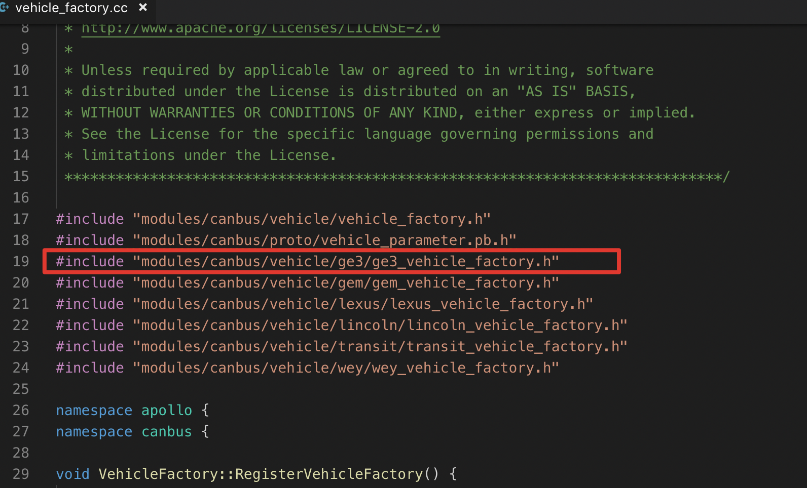
添加BUILD依赖库
在
添加头文件
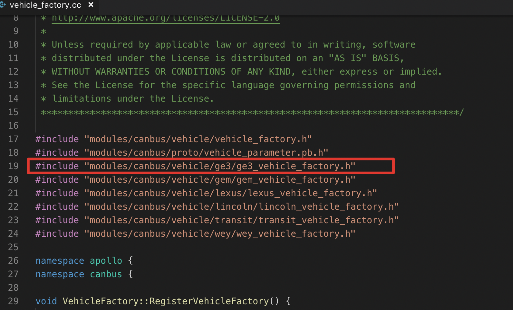
添加BUILD依赖库
在apollo/modules/canbus/vehicle/BUILD 文件内添加ge3_vehicle_factory依赖库。

6.更新配置文件¶
在modules/canbus/proto/vehicle_parameter.proto 文件内添加GE3车辆分支。
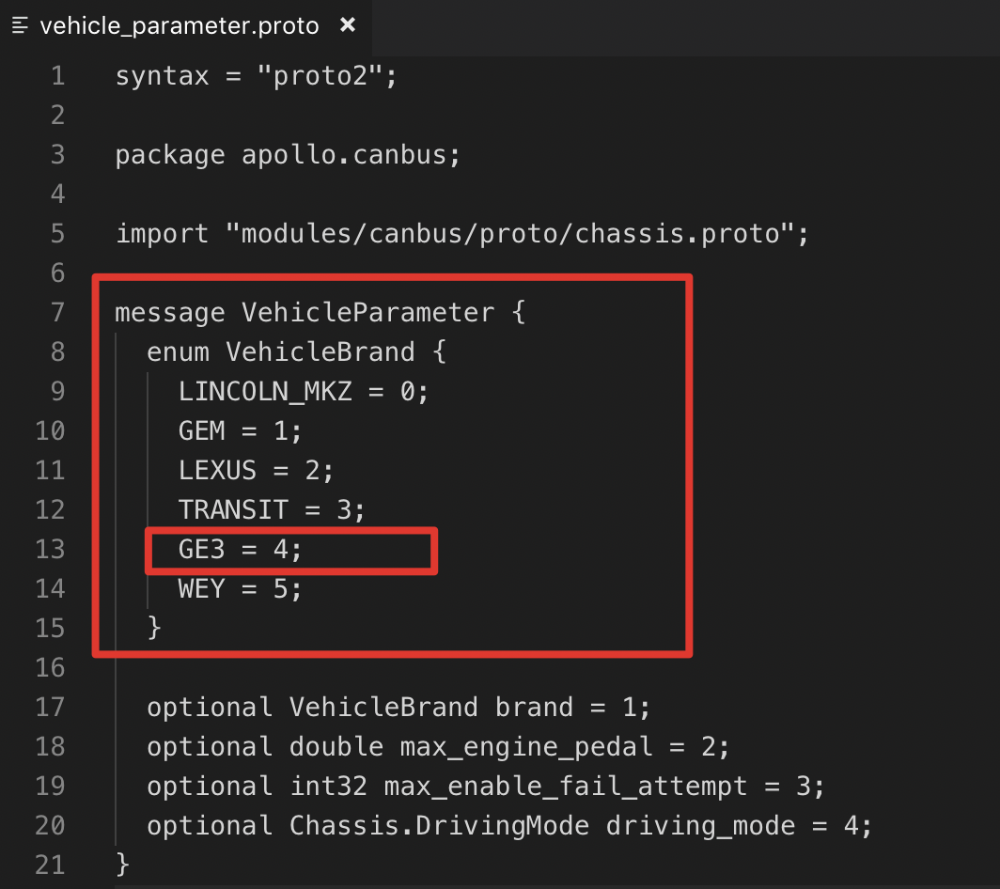
在modules/canbus/conf/canbus_conf.pb.txt 更新配置，改为ge3的canbus通信程序。
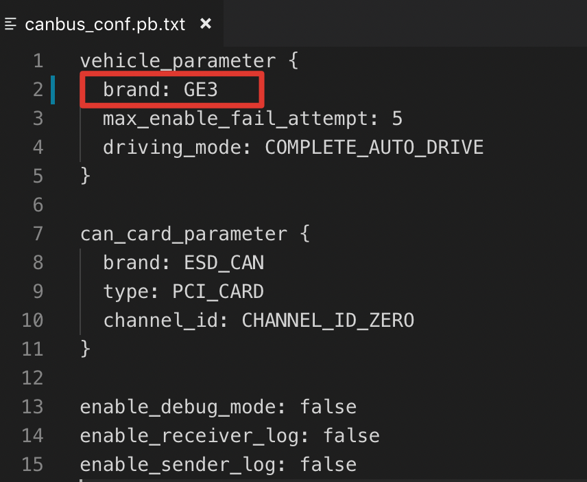
三、车辆底盘开环验证DBC的方法¶
1、开环测试¶
在确定了车辆底盘DBC后，对DBC内定义的信号进行开环测试。开环测试的主要目的是测试车辆线控信号与车辆的实际功能是否相符，测试车辆的转向、加减速性能响应是否满足车辆的线控需求，测试车辆接管逻辑是否满足要求。
底盘的开环单侧中，开发者要针对前文所述的DBC重点要求进行测试，如车辆横纵向使能独立性，横纵向接管的独立性，每个控制信号是否满足控制要求和控制边界，反馈信号是否反馈正确。在性能上，控制信号的转向和加减速延迟是否满足apollo控制性能要求，超调误差是否在线控列表范围内。请开发者根据线控列表内的性能要求，对控制信号进行测试。
2、teleop底盘联调测试¶
底盘联调测试就是通过将Apollo与车辆进行canbus通信后，测试Apollo下发控制信号（如加速/减速/转向/使能等）是否能够准确控制车辆，测试车辆的底盘反馈信号（如当前踏板百分比反馈/当前转角反馈/使能反馈/接管反馈等）是否与反馈了车辆的实际状态，验证Apollo下发的控制指令，车辆底盘能够准确执行。
teleop测试工具介绍¶
apollo里为开发者提供了一个teleop的测试工具，在apollo/modules/canbus/tools/teleop.cc，在term内输入
bash scripts/canbus_teleop.sh
即可进入teleop界面，如下图所示：
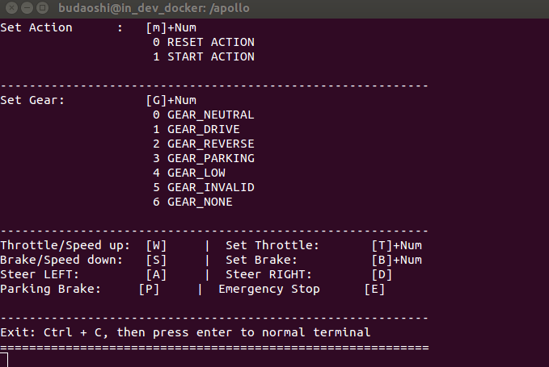
按h键，可以调出上图所示的帮助界面，可以查询Teleop工具的使用方法，下面简单对teleop各个控制指令介绍下。
Set Action 执行Apollo对车辆的使能控制：¶
按m和0键组合，表示执行reset指令，车辆退出自动驾驶模式；
按m和1键组合，表示执行start指令，车辆进入自动驾驶模式。
Set Gear 表示设置档位，按g和数字组合，进行相应档位设置：¶
按g+0挂入N档（空挡）；
按g+1挂入D档（前进挡）；
按g+2挂入R档（倒车档）；
按g+3挂入P档（驻车档）；
其它档位控制指令暂不需要，根据我们DBC要求，一般车辆控制档位指令就这几个。
Throttle/Speed up 表示每次增加油门踏板量2%，车辆加速¶
按 w 键增加油门踏板2%，使车辆加速。如果当前已经执行brake刹车指令，按w表示减少刹车踏板量2%。
油门踏板量的控制范围是0~100%，即100%时相当于油门踏板全部踩下。默认每按w键一次，油门踏板量增加2%，这个值开发者可以根据实车测试，进行修改，根据经验，每次变化2%比较合适。
注意：请先用teleop执行挂D档后再执行加油命令，请在开放场地测试，注意安全！
Set Throttle 设置油门踏板百分比¶
按t+数字可以直接设置具体的油门踏板百分比，油门踏板可设置的百分比数为0~100。如执行t20，表示直接设置当前油门踏板量为20%，并将刹车踏板百分比置为0，这一点与实际开车逻辑一致，如果踩下油门踏板，就不能踩刹车踏板。
注意：直接设置油门踏板百分比时，注意每次不要设置太大，开放场地测试，注意安全！请在车辆为D档状态下执行该命令。
Brake/Speed down 表示每次增加油门踏板量2%，车辆加速¶
按s键增加刹车踏板百分比，使车辆减速。如当前已经执行throttle加速指令，按s键表示减少油门踏板百分比。
注意：请先用teleop执行挂D档后再执行加油命令，请在开放场地测试，注意安全！
Set Brake 设置刹车踏板百分比¶
按b+数字可以直接设置具体的刹车踏板百分比，刹车踏板可设置的百分比数为0~100。如执行b20，表示直接设置当前刹车踏板量为20%，并将油门踏板百分比置为0，这一点与实际开车逻辑一致，如果踩下刹车踏板，就不能踩油门踏板。
注意：直接设置油门踏板百分比时，注意每次不要设置太大，开放场地测试，注意安全！请在车辆为D档状态下执行该命令。
Steer LEFT 表示方向盘每次向左转2%¶
按a键表示每次向左转2%的方向盘最大转角，具体转动角度应根据车辆设置的最大方向盘转角乘以2%进行换算。
该指令执行可以在车辆静止时执行，也可以在车辆启动后执行。
Steer RIGHT表示方向盘每次向右转2%¶
按s键表示每次向右转2%的方向盘最大转角，具体转动角度应根据车辆设置的最大方向盘转角乘以2%进行换算。
该指令执行可以在车辆静止时执行，也可以在车辆启动后执行。
Parking Brake 打开电子手刹¶
按P键（注意是大写P）可以手动控制车辆电子手刹开关。这个功能根据车辆的是否提供了电子手刹的控制接口而实现。
注意：执行电子手刹开启或释放时，请将车辆用teleop设置为P档状态。
Emergency Stop 紧急停车¶
按E键（注意是大写E）可以进行车辆紧急停车，默认执行50%刹车。
建议开发者在测试时尽量少用此功能，体感差，调试车辆时多注意周围情况。发生突发情况时及时用外接踩刹车踏板的方式进行手动接管车辆。
诊断工具介绍¶
了解了teleop的基本操作后，开发者根据相应的指令，对车辆执行具体的控制命令，然后通过Apollo的可视化监控工具diagnostic.sh（Apollo3.0及以前版本）/cyber_monitor 进行查看车辆当前的反馈信号，确认控制下发后车辆的执行结果是否正确。
在Apollo里提供了一个可视化的监控工具，可以用来监控底盘chassis和chassis_detail信息，通过执行
bash scripts/diagnostic.sh //Apollo3.0及以前版本
cyber_monitor //Apollo3.5版本
在apollo/modules/canbus/conf/canbus.conf文件内：
修改配置--noenable_chassis_detail_pub为--enable_chassis_detail_pub，表示在打开chassis_detail底盘详细信息，即可以查看底盘反馈信号的每一帧报文原始信息。
修改配置--receive_guardian为--noreceive_guardian，即可以关闭guardian模式，进入canbus的调试模式，这样teleop时就能够控制车辆了。如下图所示是修改canbus_conf配置文件。
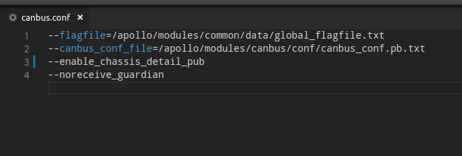
打开diagnostic或cyber_monitor界面如下

可以看到chassis和chassis_detail均有数据，频率约100Hz。chassis下数据主要是车辆的实际转速、实际踏板百分比的反馈，实际方向盘转角百分比，实际档位反馈等信息，在chassis_detail是底盘上传给apollo的反馈报文（即apollo接收底盘全部报文）的全部信息。
如下图所示为chassis信息

如下图所示为chassis_detail信息
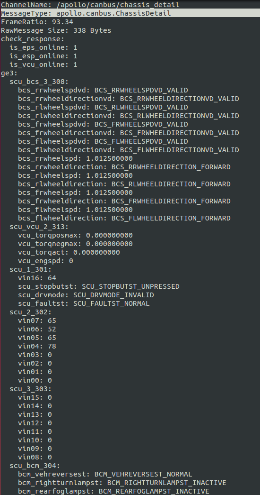 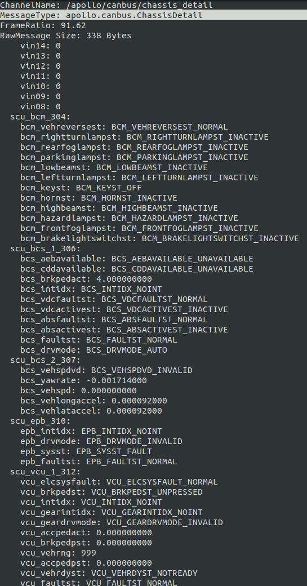